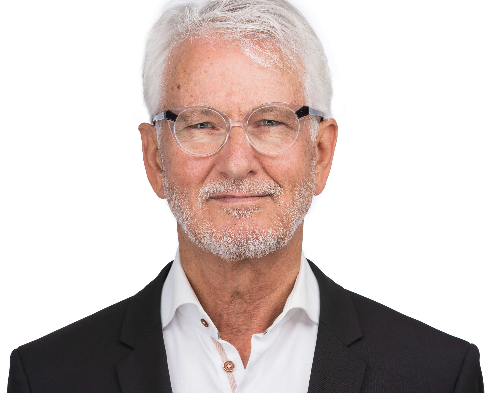

Meet the Team

Tatyana Kumarasamy
Tatyana has had a love for dogs since she was young. Now she is a registered vet who takes great care of the dogs on a daily basis. From providing medical care to just cuddling with them she is always there to help.
Shazra
Shazra is in charge of feeding and walking the dogs. These dogs are taken care of by her, and they are definetly in good hands. Shazra is also a vet who aids in caring for the puppies.
Zil
Zil is in charge of handling the application process and screening applicants. She ensures that all these dogs find a loving and safe home.

David
David is in charge of keeping our facilities clean for the dogs to have a safe and clean place to live before they get adopted.